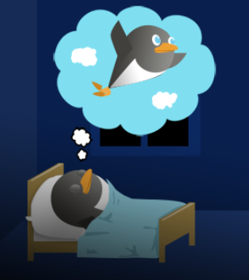
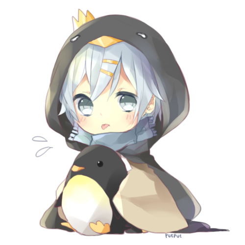
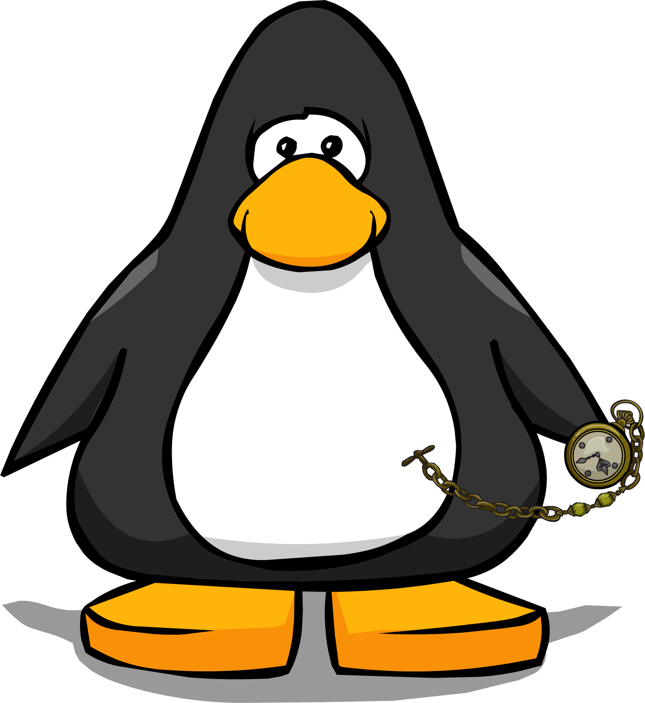
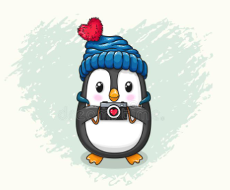
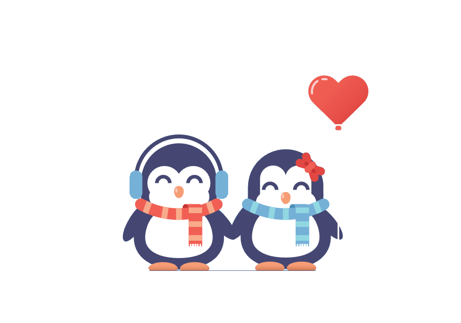
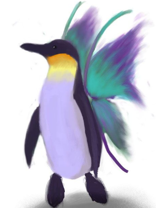
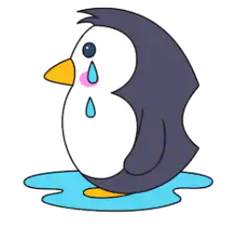

A Dream With Courage
Everybody has a dream,
everyone has a wish,
that they want to accomplish.
But everytime I take that step,
I always end up going back,
there are those who stands in my way.
Even if I try to rise,
there are those who make me drop,
A Sad Boy
On a snowy night, a little boy stopped and looked at the sky. "Wow", thought the boy, "I wonder if my family is thinking about me at all. Do they miss me? Will they look for me?" Just then he saw a girl who was crying next to him. He then asked, "Little girl, why are you crying?"
Good to Know
I thought that it was going to be finalized
Then you said the words that made me realized
"So, this is you. Why did I even bother?"
I thought we were going to be together.
You make me cry, you make me sad
It's About Time
Dreams are only dreams and that's how I want it because the moment reality becomes a reality, the pain of not achieving my dreams would be a pain. "Strive hard to achieve that dream", many people may say, but look at the many who never achieves it instead.
Memories of Time
As I open my eyes, I felt air rushing towards me. A mask that was pumping air to me fastens. As I began to slowly close my eyes again, I began to feel afraid as my family gets close out by the nurses and the door. I’m going to die.
Me With You
Today I'm thinking about you.
It is always of you.
No one else enters my head,
but you come so easy.
When I don't see you, I'm sad.
I want you to be with me.
Your smiles are everything.
Only A Fairy Tale
I care about you because it's you
A kiss on the lips because our love is true
Or so it was a thought
And then you were gone
Our love was gone
My heart was gone
Where's Prince Charming whom i need?
The Tears I Shed Became Courage
My tears that roughly drop,
Will there be someone to hold me?
As I stand here looking at the sky,
I really am nothing but a tree.
'No one will care' I thought,
'I really won't be known.'
I exist through many years,